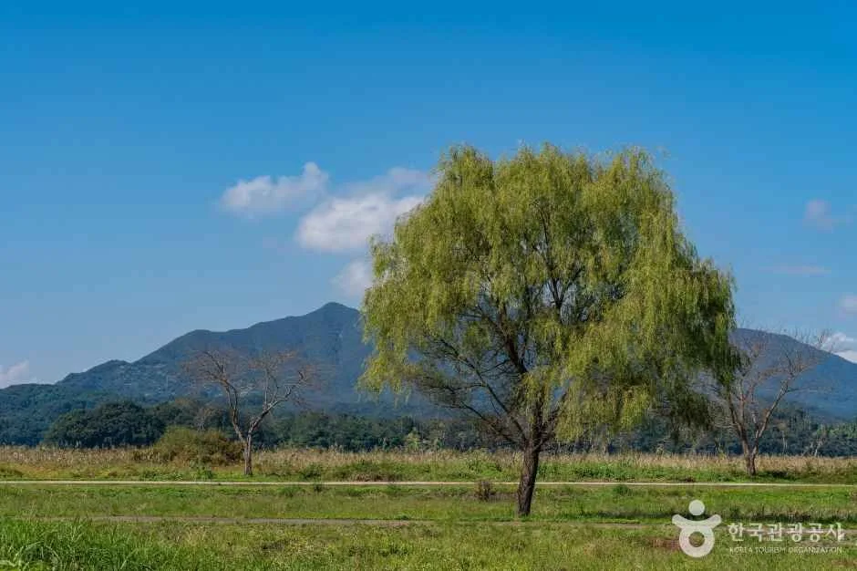
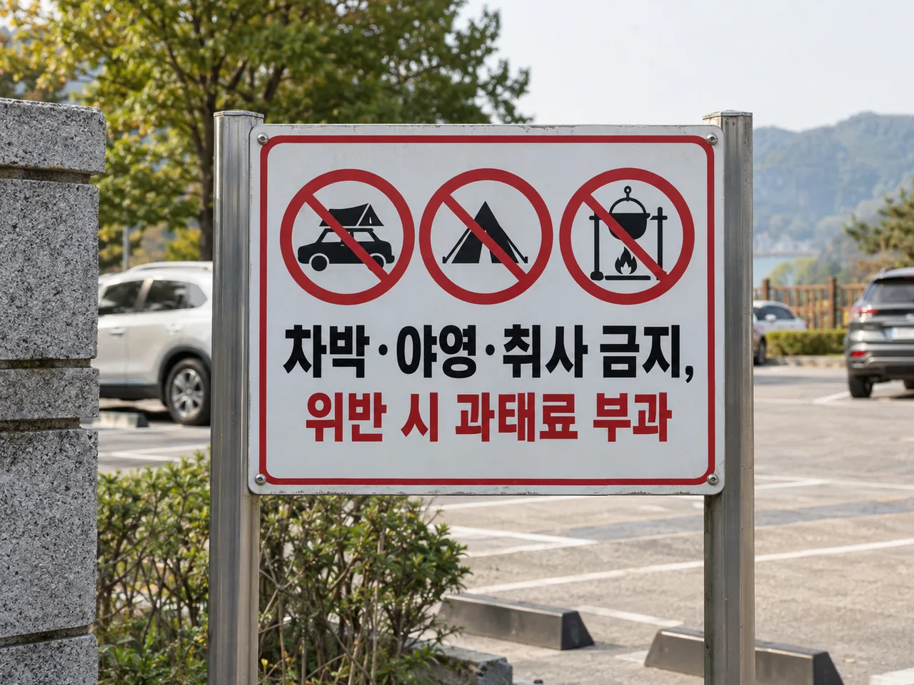
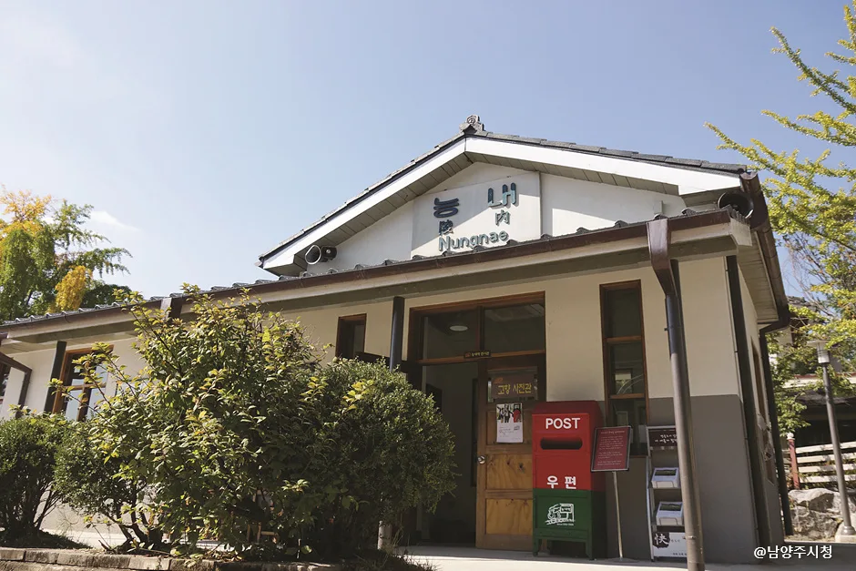
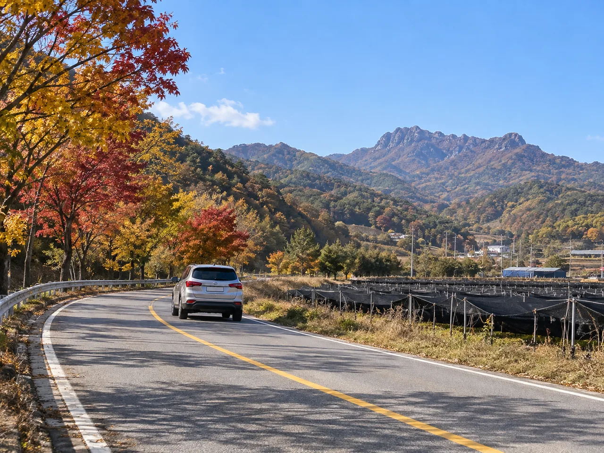

▲ 팔당호 전경. 우측 안쪽으로 팔당댐이 보인다 ⓒ 한국관광공사 (공공누리 제1유형)
1. "남양주인 줄 알았는데" — 팔당물안개공원의 정확한 위치
포털에 '팔당 코스모스'를 검색하면 은근히 헷갈립니다. 팔당호를 남양주로 기억하는 사람이 많기 때문입니다.
하지만 코스모스길로 유명한 팔당물안개공원은 남양주시가 아니라 경기도 광주시 남종면 귀여리 596에 있습니다. 옛 이름은 귀여섬이었고, 팔당댐 건설로 생긴 하중도(河中島)를 시민 명칭 공모를 통해 지금의 이름으로 바꿨습니다. 다목적광장·시민의 숲·희망의 숲·코스모스길로 구성돼 있고, 자전거 대여소와 산책로도 갖췄습니다.

▲ 팔당물안개공원 내 숲길. 자전거길과 산책로가 함께 조성돼 있다 ⓒ 한국관광공사 (공공누리 제1유형)
다만 팔당호 자체는 남양주시 조안면과도 맞닿아 있어서, 호수를 사이에 두고 광주시(남종면)와 남양주시(조안면)가 마주보는 구조입니다. 이 글의 드라이브 코스도 그래서 두 지자체에 걸쳐 있습니다 — 코스모스밭은 광주시 쪽, 능내역·다산유적지·물의정원은 남양주시 조안면 쪽입니다.
2. 코스모스 개화 시기와 볼거리
팔당물안개공원 관리 주체인 광주도시관리공사는 가을마다 공원 내에 코스모스 약 9만 본과 가을 국화 2천 본을 새로 심습니다. 코스모스길을 따라 걸으며 팔당호 경관을 함께 즐길 수 있는 구조입니다.
| 시기 | 상태 |
|---|---|
| 9월 초~중순 | 개화 시작 — 군데군데 피기 시작 |
| 9월 말~10월 중순 | 절정 — 코스모스길 전체가 만개 |
| 10월 하순 | 서서히 지는 시기 — 국화가 대신 절정 |
코스모스는 파종 후 약 3개월이면 개화하는 특성상 해마다 1~2주 정도 편차가 있습니다. 정확한 개화 상황은 방문 직전 지자체 공지나 최근 방문 후기를 확인하는 편이 안전합니다.
▲ 팔당호의 물안개와 코스모스가 어우러진 새벽 풍경을 재현한 예시 이미지 ⓒ AI 생성 일러스트
3. 주차 정보 — 공원별로 다르다
팔당호 인근은 공원마다 주차 요금 체계가 다릅니다. 출발 전에 목적지별로 확인해두는 편이 좋습니다.
| 장소 | 주차 정보 |
|---|---|
| 팔당물안개공원 (광주시 남종면) | 무료 주차장 운영 — 주말 혼잡 가능 |
| 물의정원 (남양주시 조안면) | 제1주차장 유료(1일 7,000원) · 제3주차장 무료·규모 큼 |
| 능내역사문화공원 (남양주시 조안면) | 소규모 무료 주차 공간 |
| 다산생태공원 (남양주시 조안면) | 공원 주차장 이용 — 성수기 진입로 혼잡 |
물의정원은 도로명 주소로 '경기도 남양주시 조안면 북한강로 398'을 내비게이션에 입력하면 됩니다. 상세 위치와 주차장 배치는 남양주시 문화관광 홈페이지에서 확인 가능합니다.
4. 차박, 해도 될까 — 결론부터 말하면 '안 된다'
팔당호 주변은 차박 명소로도 종종 언급되지만, 법적으로는 이미 전면 금지된 상태입니다.
국토교통부가 개정한 주차장법이 2024년 9월 10일부터 시행되면서, 국가·지자체·공공기관이 설치한 모든 공영주차장에서 야영·취사·불 피우는 행위가 금지됐습니다. 위반 시 과태료는 1차 30만원, 2차 40만원, 3차 이상 50만원입니다. 소음과 쓰레기 무단투기, 주차 공간 부족 민원이 반복되자 나온 조치입니다.

▲ 개정 주차장법 시행 이후 전국 공영주차장에 붙기 시작한 안내판을 재현한 예시 이미지 ⓒ AI 생성 일러스트
📍 팔당물안개공원 주차장도 예외가 아니다
팔당물안개공원 주차장은 광주도시관리공사가 관리하는 공영주차장이므로 개정 주차장법의 적용 대상입니다. 코스모스를 보러 저녁에 도착했더라도, 차 안에서 밤을 보내는 것은 과태료 부과 사유가 됩니다. 당일 드라이브로 계획을 잡는 편이 안전합니다.
5. 팔당호 한 바퀴 — 연계 드라이브 코스
팔당물안개공원만 보고 돌아가기보다, 팔당대교를 건너 남양주 조안면으로 넘어가는 코스를 함께 잡으면 하루 드라이브로 알맞습니다.
| 순서 | 장소 | 특징 |
|---|---|---|
| 1 | 팔당물안개공원 (광주시 남종면) | 코스모스길, 팔당호 조망 |
| 2 | 물의정원 (남양주시 조안면) | 배나리교 건너 황화코스모스 꽃길 |
| 3 | 능내역사문화공원 (남양주시 조안면 능내리) | 2008년 폐역, 옛 대합실 그대로 보존 |
| 4 | 다산생태공원·다산유적지 (남양주시 조안면 능내리) | 정약용 생가·묘, 팔당호반 정자 |
▲ 남양주 물의정원의 배나리교. 다리를 건너면 황화코스모스 꽃길이 이어진다 ⓒ 한국관광공사 (공공누리 제1유형)
능내역은 2008년 중앙선 복선 전철화로 폐역된 간이역입니다. 옛 대합실과 나무 의자, 매표소가 그대로 남아 있어 사진 명소로도 유명합니다. 한강 자전거길이 역 바로 앞을 지나갑니다.

▲ 능내역사문화공원. 폐역 당시 모습을 그대로 보존해 놓았다 ⓒ 남양주시청 (공공누리 제1유형)
다산유적지·다산생태공원은 실학자 정약용의 생가와 묘가 있는 마재마을 일대입니다. 팔당호반을 따라 정자와 산책로가 조성돼 있어 코스모스길과는 또 다른 분위기의 호수 조망을 볼 수 있습니다.
▲ 다산생태공원 내 팔당호반 정자. 호수를 조망하며 쉬어갈 수 있다 ⓒ 한국관광공사 (공공누리 제1유형)
네 곳을 다 묶어도 차량 이동 거리가 짧아 하루 코스로 무리가 없습니다. 다만 가을 주말에는 좁은 지방도가 정체되는 구간이 있으니, 오전 일찍 출발하는 편을 권합니다.
6. 가는 길 — 팔당호를 끼고 달리는 구간
서울에서는 강변북로·올림픽대로를 거쳐 6번 국도(경충대로)로 남종면 방향으로 진입하는 경로가 일반적입니다. 대중교통을 이용한다면 강변역에서 버스 1113-1 또는 경기광주역에서 버스 660을 타고 '귀여1리' 정류장에서 내리면 됩니다.

▲ 팔당호 주변 도로는 단풍철 국도 드라이브 코스로도 인기가 많다 ⓒ AI 생성 일러스트
팔당대교를 건너 남양주 조안면으로 넘어가면 북한강로를 따라 물의정원·능내역·다산생태공원이 순서대로 이어집니다. 강변도로 자체가 완만한 곡선이 많아 속도를 낮추고 경치를 즐기기에 알맞은 구간입니다.
| 항목 | 내용 |
|---|---|
| 위치 확인 | 팔당물안개공원은 광주시 — 내비게이션에 '남양주'로만 검색하면 엉뚱한 곳이 나올 수 있음 |
| 개화 확인 | 절정은 9월 말~10월 중순 — 방문 직전 최신 후기 확인 권장 |
| 차박 금지 | 공영주차장 야영·취사 전면 금지 — 과태료 최대 50만원 |
| 주차 | 팔당물안개공원·능내역은 무료 / 물의정원 제1주차장은 유료 |
| 당일 일정 | 4곳 모두 묶어도 당일 드라이브로 충분 |
7. 정리
코스모스로 유명한 팔당물안개공원은 남양주시가 아니라 경기도 광주시 남종면 귀여리에 있습니다. 매년 코스모스 약 9만 본을 새로 심고, 절정은 9월 말~10월 중순입니다. 주차장은 무료로 운영됩니다.
차박은 안 됩니다. 2024년 9월 개정된 주차장법에 따라 전국 공영주차장에서 야영·취사가 전면 금지됐고, 위반 시 과태료가 최대 50만원입니다. 팔당물안개공원 주차장도 예외가 아닙니다.
팔당대교를 건너면 남양주시 조안면의 물의정원·능내역·다산생태공원으로 이어지는 호수 한 바퀴 코스가 완성됩니다. 네 곳 모두 당일 드라이브로 묶을 수 있는 거리입니다.